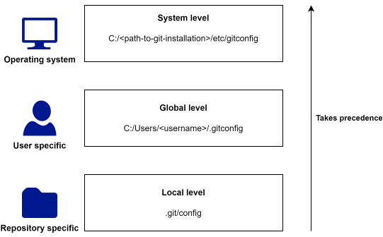

Appendix B — Configuration of Git
Section Section 2.1 briefly introduced how to configure Git using the git config command. This appendix explains how Git stores and organizes configuration settings in files. We also introduce several useful configuration variables and Git aliases.
Understanding Git configuration can help you troubleshoot unexpected settings and customize Git’s behaviour. To keep the explanations accessible to beginners, this appendix focuses on common Git configuration scenarios and omits some advanced details and exceptions.
B.1 Git configuration file structure
Git stores configuration settings in plain-text files, such as ~/.gitconfig. A simple Git configuration file might look like this:
name = Your Name
email = your@email.com
[core]
editor = notepad
The file contains configuration settings expressed as key-value pairs and grouped into sections identified by names in square brackets. A configuration setting is identified by its section name and key. For example, the name key in the [user] section is referenced as user.name. A configuration setting such as user.name is also called a configuration variable. The value assigned to this variable, such as Your Name, is called its configuration value.
B.2 Git configuration scopes and precedence
Git uses three main configuration scopes: system, global, and local. These scopes determine which users and repositories the settings apply to. The same setting can be defined in multiple scopes. When this happens, settings from more specific scopes generally take precedence over settings from broader scopes. In other words, local settings take precedence over global settings, which in turn take precedence over system settings.

Suppose core.editor is set to vim in the system-level configuration file and to notepad in the global-level configuration file. Because global configuration takes precedence over system configuration, Git uses notepad as the effective value of core.editor. The system-level setting remains unchanged.
System level
System-level configuration settings provide defaults for all users of the same Git installation. In a typical Git for Windows installation, the system-level configuration file is located at C:/Program Files/Git/etc/gitconfig. Editing this file typically requires administrator privileges on Windows.
System-level settings are useful when an administrator wants to establish defaults for all users of a computer, such as on a shared workstation or server. For example, an administrator could configure Notepad as the default Git editor for all users of a Windows server.
Global level
Global configuration settings apply to Git commands run by a particular user. On Windows, the global configuration file is usually located in the user’s home directory, for example, C:/Users/<username>/.gitconfig.
The global scope is generally the appropriate place to configure your name, email address, aliases, and other personal settings. These settings apply to Git commands you run, unless overridden by settings with higher precedence.
Local level
Local configuration settings apply to Git commands run in a particular Git repository. In a typical repository, the local configuration file is located at .git/config relative to the repository’s root directory.
Local settings are useful when a repository needs different configuration settings than those defined globally. For example, if you are using Git on your work computer, you would probably set user.email to your work email in your global configuration file. If you also work on a personal Git project on the same computer, you could use the local configuration file to set user.email to your personal email in that specific repository.
B.3 Working with configuration files
The git config command provides subcommands for inspecting and modifying Git configuration settings. You can use the --system, --global, and --local flags to work with settings from a particular configuration scope. Without these flags, Git generally reads settings from all applicable scopes and writes settings to the local scope.
List configuration settings
To list the configuration settings Git reads in the current context, use git config list. To list only the settings from a specific scope, e.g. the global settings, use git config list --global. By default, git config list shows a list of settings with no additional information, and will include multiple instances of the same setting if it is defined in multiple configuration files that Git reads in the current context. For example, suppose core.editor is set to vim in the system configuration file and notepad in the global configuration file. The output of git config list might then look like this:
$ git config list core.editor=vim user.name=Your name user.email=your@email.com core.editor=notepad
In Exercise 1, you will learn how to display the source and scope of each setting.
Get the value of a configuration variable
Use git config get [<scope>] <name> to retrieve the value of a configuration variable, where [<scope>] is optional. If the target scope is not provided, the command returns the effective value according to configuration precedence.
To retrieve the configuration value of user.name from the global configuration scope, you could run the following command:
$ git config get --global user.name Your name
If the requested variable is not defined, the command produces no output and exits with a nonzero status.
Set the value of a configuration variable
Use git config set [<scope>] <name> <value> to set a configuration variable to a specified value. If no scope is specified, Git attempts to write the setting to the local repository configuration file. If the current working directory is not inside a Git repository, the command fails unless another target configuration file or scope is specified.
For example, to set user.email to some@email.com in the global configuration file, run:
$ git config set --global user.email some@email.com
Unset the value of a configuration variable
Use git config unset [<scope>] <name> to remove a configuration setting. For example, to remove the value of core.editor in the global configuration file, run:
$ git config unset --global core.editor
Removing a setting does not necessarily remove its effective value if it is also defined in another scope.
Edit a configuration file
Finally, you can make manual changes to a configuration file with git config edit [<scope>]. This opens the configuration file for the specified scope in Git’s configured text editor. Without an explicit scope, this command opens the local configuration file and therefore requires a repository.
B.4 Useful configuration settings
Git provides many configuration settings that control its behaviour. This section introduces a few particularly useful ones.
core.editor
The core.editor setting specifies what text editor Git uses for operations that require editing text, such as writing commit messages. Git for Windows includes Vim, which is commonly used as the default text editor.
If you are not familiar with Vim, you can configure Git to use Windows Notepad with the following command:
$ git config set --global core.editor notepad
Git can normally locate the Notepad executable by its command name. Alternatively, you can specify the full path to the Notepad executable explicitly. For example:
$ git config set --global core.editor "C:/Windows/System32/notepad.exe"
commit.template
The commit.template setting specifies a file whose contents Git uses as the initial text when Git opens a text editor for composing a commit message. For example, the following text could be used as a template containing reminders for writing a useful commit message.
# Subject: Brief summary in imperative mood (max. 50 characters) # Capitalize the first word; do not end with a period # This line is 50 characters###################### # Body: Explain what changed and why, not how # Separate from subject with a blank line; wrap at 72 characters # This line is 72 characters############################################
By default, Git removes lines starting with # before saving the commit message. The template provides guidance, but you must write the commit message yourself.
To use this file as a template for commit messages, save it as ~/.git-commit-template and configure Git using the following command:
$ git config set --global commit.template ~/.git-commit-template
user.name and user.email
The user.name and user.email settings provide the default name and email address recorded in the author and committer information of new commits. Configure these settings to ensure that new commits are attributed to your intended name and email address.
B.5 Aliases
Git aliases let you define shortcuts for Git commands. Aliases are particularly useful for commands that are frequently used but difficult to remember or tedious to type. As a contrived example, consider the git status command. You will probably use this command frequently. Git does not automatically recognize abbreviated subcommand names, but you could set up an alias allowing you to type git st instead of git status.
$ git config set --global alias.st status
As seen above, aliases are settings in configuration files in the alias section. The value specifies the Git command and any additional arguments to use. If the alias value contains spaces, enclose the value in quotes. Choose a descriptive alias name that does not conflict with an existing Git subcommand.
A more practical example is the git log command. Unlike graphical Git clients, Git’s command-line interface does not display the commit history as a graph by default. However, git log --graph can display a text-based representation of the history. For example, the following command displays a compact, text-based graph of the commit history:
$ git log --graph --oneline --all
As mentioned above, --graph displays a text-based representation of the history, --oneline condenses information about each commit to one line, and --all tells Git to consider all references, including branches, when displaying the history. Because the command combines several flags, it is a useful candidate for an alias:
$ git config set --global alias.graph "log --graph --oneline --all"
You can now run git graph to execute git log --graph --oneline --all.
B.6 Exercises
Exercise 1
Your task in this exercise is to configure global settings, create a repository with local settings, and define an alias for a useful command.
1. Configure global settings.
Configure Git to use a text editor of your choice globally. If you are using Windows, Notepad is a sensible option. Also configure your name and email address in the global scope.
2. Create a repository and configure local settings.
Create a directory named ex01-git-config in your home directory, navigate into it, and initialize a Git repository. In the repository’s local configuration file, set user.email to a different value.
3. Get the values of core.editor and user.email.
While your current working directory is still ~/ex01-git-config, retrieve the effective values of the core.editor and user.email configuration variables. Before running the commands, predict which values Git will return based on the configuration scopes and their precedence. Then run the commands to verify your predictions.
4. List all configuration settings.
List all configuration settings, including the scope and source file of each setting.
5. Make an alias.
Suppose you frequently use the command from the previous step but find its flags difficult to remember or tedious to type. Make an alias for the command in your global configuration file. Choose an alias name that does not conflict with an existing Git subcommand. For example, you could name the alias config-show.
6. Test the alias.
Test the alias by running it and verifying that it displays the configuration settings with their scopes and source files.